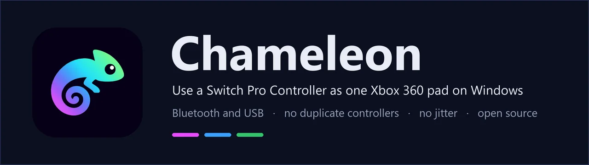
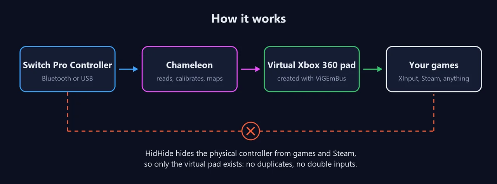
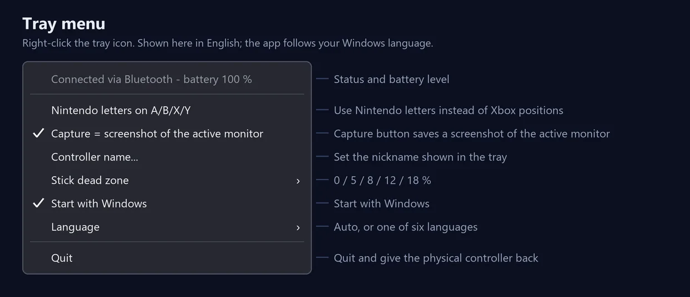

Un mando, sin duplicados
El mando físico se oculta de los juegos con HidHide; solo existe el Xbox 360 virtual.
Windows 10/11 x64 · Gratis · Licencia MIT
Hace que un mando Nintendo Switch Pro parezca un mando de Xbox 360 normal para todos los juegos, por Bluetooth o USB. Oculta el mando real para que no haya duplicados.
Windows 10/11 x64 · el instalador añade los dos controladores que necesita

Funciones
Los conversores habituales suelen mostrar dos mandos, temblar en el centro del stick o pelearse con Steam.
El mando físico se oculta de los juegos con HidHide; solo existe el Xbox 360 virtual.
Lo encuentra solo y sigue intentándolo si se desconecta. Sin reiniciar nada.
Mide el centro cada vez que conecta y aplica una zona muerta radial configurable.
Reenvía la vibración de los juegos y avisa en la bandeja cuando la batería está baja.
Opcional: hace una captura del monitor activo, con sonido de obturador.
Distribución Xbox o letras Nintendo, apodo del mando y seis idiomas.


Instalar
El instalador trae ViGEmBus y HidHide si faltan.
Baja Chameleon-Setup desde GitHub y ejecútalo como administrador.
Por Bluetooth, mantén el botón de sincronización hasta que corran las luces y añádelo en Windows. Por USB, solo conéctalo.
Al detectar el mando se calibra un momento (no toques los sticks) y el icono de la bandeja se enciende.
Dudas
Sí. El mando real sigue oculto mientras Chameleon está abierto, también entre desconexiones, para que Steam no lo agarre al reconectar.
El instalador no está firmado. Elige Más información → Ejecutar de todas formas; el código está abierto en GitHub.